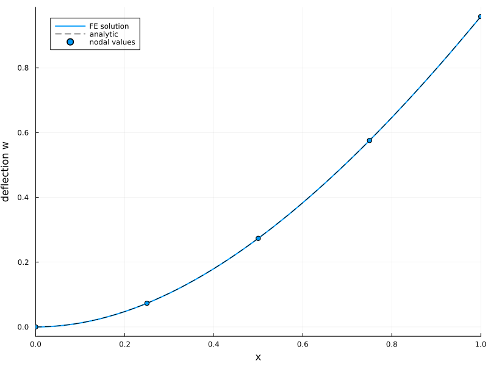
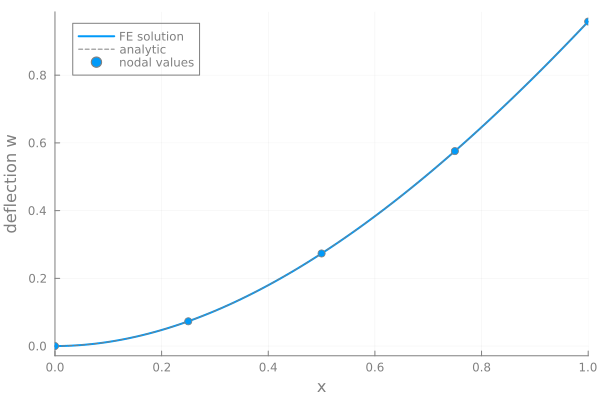
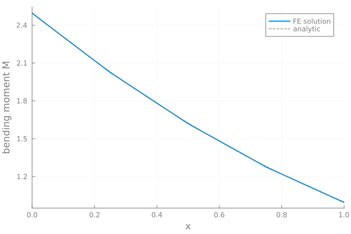

Euler-Bernoulli beam


Figure 1: Deflection of a cantilever beam, clamped at the left end and loaded by a distributed load, a point load, and a moment at the tip.
This example is also available as a Jupyter notebook: euler_bernoulli_beam.ipynb.
Introduction
In this tutorial we solve the Euler-Bernoulli beam equation, our first fourth-order problem. The strong form for a beam on the domain $\Omega = (0, L)$ reads
\[EI \frac{\mathrm{d}^4 w}{\mathrm{d}x^4} = q,\]
where $w$ is the transverse deflection, $EI$ the bending stiffness, and $q$ a distributed load. We consider a cantilever: the left end is clamped,
\[w(0) = 0, \quad w'(0) = 0,\]
and at the right end we apply a point load $P$ and a moment $\bar{M}$.
To derive the weak form we multiply the strong form with a test function $\delta w$ and integrate by parts twice:
\[\int_0^L q \, \delta w \, \mathrm{d}x = \int_0^L EI \, w'''' \, \delta w \, \mathrm{d}x = \int_0^L EI \, w'' \, \delta w'' \, \mathrm{d}x + \left[ EI \, w''' \, \delta w - EI \, w'' \, \delta w' \right]_0^L.\]
In the boundary term we recognize the shear force $V = -EI \, w'''$ and the bending moment $M = EI \, w''$. At the clamped end the test functions vanish, $\delta w(0) = \delta w'(0) = 0$, and at the tip the natural boundary conditions prescribe $V(L) = P$ and $M(L) = \bar{M}$. The weak form thus reads: find $w \in \mathbb{U}$ such that
\[\int_0^L EI \, w'' \, \delta w'' \, \mathrm{d}x = \int_0^L q \, \delta w \, \mathrm{d}x + P \, \delta w(L) + \bar{M} \, \delta w'(L) \quad \forall \, \delta w \in \mathbb{T}.\]
Two things are new compared to the second-order problems in the previous tutorials:
- The weak form contains second derivatives of the trial and test functions, so $\mathbb{U}$ and $\mathbb{T}$ are subspaces of $H^2$. Piecewise polynomials belong to $H^2$ only if they are $C^1$-continuous, i.e. the derivative may not jump between elements. Standard Lagrange interpolations are only $C^0$ and can therefore not be used. Instead we use the cubic
Hermiteinterpolation, which has two degrees of freedom per node – the deflection $w$ and the slope $w'$ – and sharing both between neighboring elements gives exactly $C^1$ continuity. - The boundary terms load not only the deflection ($P \, \delta w(L)$) but also the slope ($\bar{M} \, \delta w'(L)$). Since the slope is a degree of freedom, applying a point moment is as simple as adding to its entry in the force vector.
A useful property of this discretization is that the nodal deflections and slopes of the finite element solution are exact, on any mesh, provided that the load term is integrated exactly (which our quadrature rule does for the constant $q$ used here). To make this visible we solve with only 4 elements and compare against the analytic solution
\[w(x) = \frac{q x^2 (x^2 - 4Lx + 6L^2)}{24 EI} + \frac{P x^2 (3L - x)}{6 EI} + \frac{\bar{M} x^2}{2 EI}.\]
Commented program
Now we solve the problem in Ferrite. What follows is a program spliced with comments. The full program, without comments, can be found in the next section.
First we load Ferrite and define the parameters (in normalized units).
using Ferrite
L = 1.0 # beam length
EI = 1.0 # bending stiffness
q = 1.0 # distributed load
P = 1.0 # tip point load
M̄ = 1.0; # tip momentMesh
We discretize the beam with 4 Line elements. This is our first 1D grid: the facets of a Line cell are its two end vertices, and generate_grid sets up the facet sets "left" and "right" for the two end points. We use "left" for the clamped end below; the tip loads need no facet set since they are applied directly to dofs.
grid = generate_grid(Line, (4,), Vec((0.0,)), Vec((L,)));Trial and test functions
We use the cubic Hermite interpolation on the reference line. It has 4 basis functions, associated with the dofs $(w_1, w_1', w_2, w_2')$ where subscripts denote the two vertices: Ferrite.vertexdof_indices(ip) == ((1, 2), (3, 4)). The slope dofs carry the physical derivative $w' = \mathrm{d}w/\mathrm{d}x$.
ip = Hermite{RefLine, 3}();The integrand of the stiffness contribution is a product of two second derivatives, each linear in $\xi$, so two Gauss points integrate it exactly.
qr = QuadratureRule{RefLine}(2);Since the weak form needs second derivatives of the shape functions we construct the CellValues with update_hessians = true (they are off by default for performance) and access them with shape_hessian.
cellvalues = CellValues(qr, ip; update_hessians = true);Degrees of freedom
The DofHandler distributes the dofs as usual; the two dofs per vertex are handled automatically, giving $2 (n_{el} + 1) = 10$ dofs in total.
dh = DofHandler(grid)
add!(dh, :w, ip)
close!(dh);Recall that the numbering of degrees of freedom does not follow the numbering of the nodes in the grid. With Hermite there is a second pitfall: u[i] may be either a deflection or a slope dof.
Boundary conditions
The clamped end requires both $w(0) = 0$ and $w'(0) = 0$. By default a Dirichlet condition on a Hermite field constrains only the deflection dofs (prescribing a function value to a slope dof would be wrong).
ch = ConstraintHandler(dh)
add!(ch, Dirichlet(:w, getfacetset(grid, "left"), (x, t) -> 0.0));The slope dofs are constrained with a second Dirichlet with kind = :derivative, where the function now prescribes the derivative $w'$ instead of the value:
add!(ch, Dirichlet(:w, getfacetset(grid, "left"), (x, t) -> 0.0; kind = :derivative))
close!(ch);Assembling the linear system
The element routine follows the same structure as in the heat equation tutorial, with the stiffness $\int EI \, \delta w'' \, w'' \, \mathrm{d}x$ now built from shape_hessian. In 1D the hessian is a 1×1 tensor, so the double contraction ⊡ is just a scalar product.
function assemble_global!(K, f, cellvalues, dh, EI, q)
n_basefuncs = getnbasefunctions(cellvalues)
Ke = zeros(n_basefuncs, n_basefuncs)
fe = zeros(n_basefuncs)
assembler = start_assemble(K, f)
for cell in CellIterator(dh)
reinit!(cellvalues, cell)
fill!(Ke, 0)
fill!(fe, 0)
for q_point in 1:getnquadpoints(cellvalues)
dΩ = getdetJdV(cellvalues, q_point)
for i in 1:n_basefuncs
δw = shape_value(cellvalues, q_point, i)
δw′′ = shape_hessian(cellvalues, q_point, i)
fe[i] += q * δw * dΩ
for j in 1:n_basefuncs
w′′ = shape_hessian(cellvalues, q_point, j)
Ke[i, j] += EI * (δw′′ ⊡ w′′) * dΩ
end
end
end
assemble!(assembler, celldofs(cell), Ke, fe)
end
return K, f
end
K = allocate_matrix(dh)
f = zeros(ndofs(dh))
assemble_global!(K, f, cellvalues, dh, EI, q);Point load and point moment
The boundary terms of the weak form become contributions to single entries of the force vector: $P$ multiplies $\delta w(L)$, i.e. it loads the deflection dof at the tip, and $\bar{M}$ multiplies $\delta w'(L)$, i.e. it loads the slope dof. With Lagrange elements a point moment would require e.g. a force couple, but here it is one vector entry. The tip dofs are local dofs 3 (deflection) and 4 (slope) of the last cell.
tip_dofs = celldofs(dh, getncells(grid))
f[tip_dofs[3]] += P
f[tip_dofs[4]] += M̄;Solution of the system
apply!(K, f, ch)
u = K \ f;Postprocessing
Since the mesh is 1D we plot the solution directly instead of exporting to VTK. To evaluate the FE solution inside the elements we construct a CellValues with the plotting points as "quadrature" points (the weights are unused).
ξs = [Vec((ξ,)) for ξ in range(-1.0, 1.0; length = 21)]
qr_plot = QuadratureRule{RefLine}(zeros(length(ξs)), ξs)
cv_plot = CellValues(qr_plot, ip; update_hessians = true, update_detJdV = false)
x_fe = Float64[]; w_fe = Float64[]; M_fe = Float64[]
for cell in CellIterator(dh)
reinit!(cv_plot, cell)
ue = u[celldofs(cell)]
for q_point in 1:getnquadpoints(cv_plot)
push!(x_fe, spatial_coordinate(cv_plot, q_point, getcoordinates(cell))[1])
push!(w_fe, function_value(cv_plot, q_point, ue))
push!(M_fe, EI * function_hessian(cv_plot, q_point, ue)[1, 1])
end
endFor comparison we evaluate the analytic deflection and bending moment $M(x) = EI \, w''(x)$:
w_ana(x) = (q * x^2 * (x^2 - 4L * x + 6L^2) / 24 + P * x^2 * (3L - x) / 6 + M̄ * x^2 / 2) / EI
M_ana(x) = q * (L - x)^2 / 2 + P * (L - x) + M̄;We plot the FE deflection together with the analytic solution and mark the nodal values, which coincide with the analytic curve even on this coarse mesh. In fact, for $q = 0$ the analytic solution is a cubic polynomial, and the FE solution would be exact everywhere.
import Plots
node_x = range(0.0, L; length = getncells(grid) + 1)
# Transparent background and gray foreground render well on both the light and the dark
# documentation theme
theme = (background_color = :transparent, foreground_color = :gray)
plt_w = Plots.plot(x_fe, w_fe; label = "FE solution", color = 1, linewidth = 2, theme...)
Plots.plot!(plt_w, w_ana; xlims = (0, L), label = "analytic", color = :gray, linestyle = :dash)
Plots.scatter!(plt_w, node_x, evaluate_at_grid_nodes(dh, u, :w); label = "nodal values", color = 1)
Plots.plot!(plt_w; xlabel = "x", ylabel = "deflection w", legend = :topleft)
Figure 2: FE deflection compared to the analytic solution. The nodal values are exact.
The bending moment is obtained from the second derivative of the solution via function_hessian. The FE moment is piecewise linear and only approximates the quadratic analytic moment: derivatives of the solution converge at a lower rate than the solution itself.
plt_M = Plots.plot(x_fe, M_fe; label = "FE solution", color = 1, linewidth = 2, theme...)
Plots.plot!(plt_M, M_ana; xlims = (0, L), label = "analytic", color = :gray, linestyle = :dash)
Plots.plot!(plt_M; xlabel = "x", ylabel = "bending moment M", legend = :topright)
Figure 3: Bending moment $M = EI \, w''$. The distributed load $q$ is the part of the solution the cubic elements cannot represent exactly.
Plain program
Here follows a version of the program without any comments. The file is also available here: euler_bernoulli_beam.jl.
using Ferrite
L = 1.0 # beam length
EI = 1.0 # bending stiffness
q = 1.0 # distributed load
P = 1.0 # tip point load
M̄ = 1.0; # tip moment
grid = generate_grid(Line, (4,), Vec((0.0,)), Vec((L,)));
ip = Hermite{RefLine, 3}();
qr = QuadratureRule{RefLine}(2);
cellvalues = CellValues(qr, ip; update_hessians = true);
dh = DofHandler(grid)
add!(dh, :w, ip)
close!(dh);
ch = ConstraintHandler(dh)
add!(ch, Dirichlet(:w, getfacetset(grid, "left"), (x, t) -> 0.0));
add!(ch, Dirichlet(:w, getfacetset(grid, "left"), (x, t) -> 0.0; kind = :derivative))
close!(ch);
function assemble_global!(K, f, cellvalues, dh, EI, q)
n_basefuncs = getnbasefunctions(cellvalues)
Ke = zeros(n_basefuncs, n_basefuncs)
fe = zeros(n_basefuncs)
assembler = start_assemble(K, f)
for cell in CellIterator(dh)
reinit!(cellvalues, cell)
fill!(Ke, 0)
fill!(fe, 0)
for q_point in 1:getnquadpoints(cellvalues)
dΩ = getdetJdV(cellvalues, q_point)
for i in 1:n_basefuncs
δw = shape_value(cellvalues, q_point, i)
δw′′ = shape_hessian(cellvalues, q_point, i)
fe[i] += q * δw * dΩ
for j in 1:n_basefuncs
w′′ = shape_hessian(cellvalues, q_point, j)
Ke[i, j] += EI * (δw′′ ⊡ w′′) * dΩ
end
end
end
assemble!(assembler, celldofs(cell), Ke, fe)
end
return K, f
end
K = allocate_matrix(dh)
f = zeros(ndofs(dh))
assemble_global!(K, f, cellvalues, dh, EI, q);
tip_dofs = celldofs(dh, getncells(grid))
f[tip_dofs[3]] += P
f[tip_dofs[4]] += M̄;
apply!(K, f, ch)
u = K \ f;
ξs = [Vec((ξ,)) for ξ in range(-1.0, 1.0; length = 21)]
qr_plot = QuadratureRule{RefLine}(zeros(length(ξs)), ξs)
cv_plot = CellValues(qr_plot, ip; update_hessians = true, update_detJdV = false)
x_fe = Float64[]; w_fe = Float64[]; M_fe = Float64[]
for cell in CellIterator(dh)
reinit!(cv_plot, cell)
ue = u[celldofs(cell)]
for q_point in 1:getnquadpoints(cv_plot)
push!(x_fe, spatial_coordinate(cv_plot, q_point, getcoordinates(cell))[1])
push!(w_fe, function_value(cv_plot, q_point, ue))
push!(M_fe, EI * function_hessian(cv_plot, q_point, ue)[1, 1])
end
end
w_ana(x) = (q * x^2 * (x^2 - 4L * x + 6L^2) / 24 + P * x^2 * (3L - x) / 6 + M̄ * x^2 / 2) / EI
M_ana(x) = q * (L - x)^2 / 2 + P * (L - x) + M̄;
import Plots
node_x = range(0.0, L; length = getncells(grid) + 1)
# Transparent background and gray foreground render well on both the light and the dark
# documentation theme
theme = (background_color = :transparent, foreground_color = :gray)
plt_w = Plots.plot(x_fe, w_fe; label = "FE solution", color = 1, linewidth = 2, theme...)
Plots.plot!(plt_w, w_ana; xlims = (0, L), label = "analytic", color = :gray, linestyle = :dash)
Plots.scatter!(plt_w, node_x, evaluate_at_grid_nodes(dh, u, :w); label = "nodal values", color = 1)
Plots.plot!(plt_w; xlabel = "x", ylabel = "deflection w", legend = :topleft)
plt_M = Plots.plot(x_fe, M_fe; label = "FE solution", color = 1, linewidth = 2, theme...)
Plots.plot!(plt_M, M_ana; xlims = (0, L), label = "analytic", color = :gray, linestyle = :dash)
Plots.plot!(plt_M; xlabel = "x", ylabel = "bending moment M", legend = :topright)This page was generated using Literate.jl.